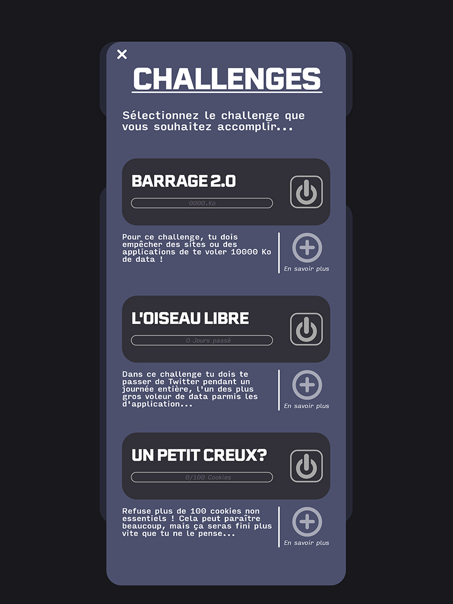

Projet MADE - “Au défi!”
Projet de fin d’études bac +3, il se concentre sur l’utilisation et la sensibilisation d’une cible jeune à la data et à des enjeux de plus en plus pressants dans nos sociétés numériques. Je me suis greffé non officiellement à la campagne de l’UFC Que Choisir "Je ne suis pas une data”, du constat que cette dernière ne ciblait pas suffisamment les jeunes, futurs usagers majoritaires des outils numériques et acteurs de la société de demain. Ce fut l’occasion de me documenter sur la data et ses enjeux, ainsi que de mieux appréhender l'ensemble d’un projet design.
